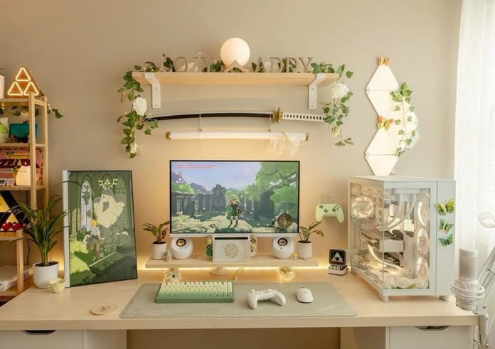
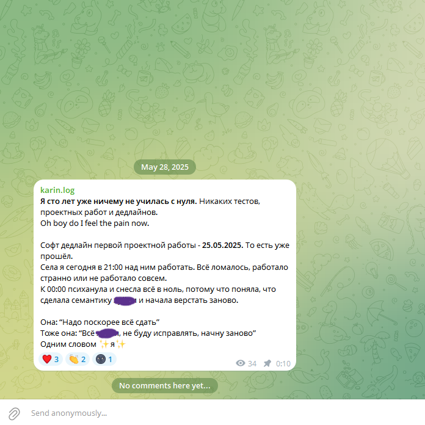
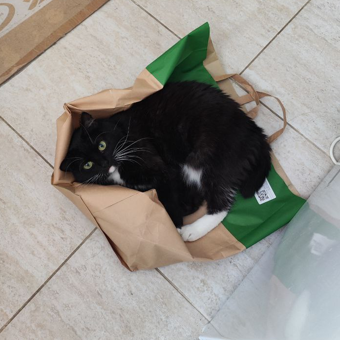
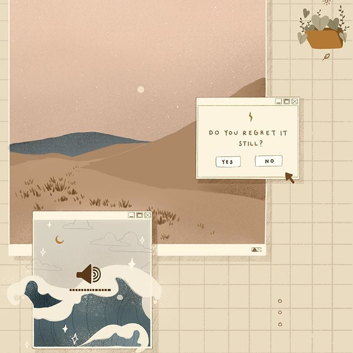
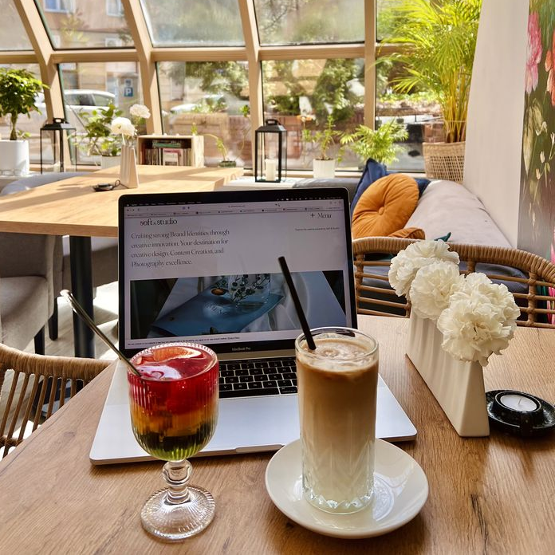
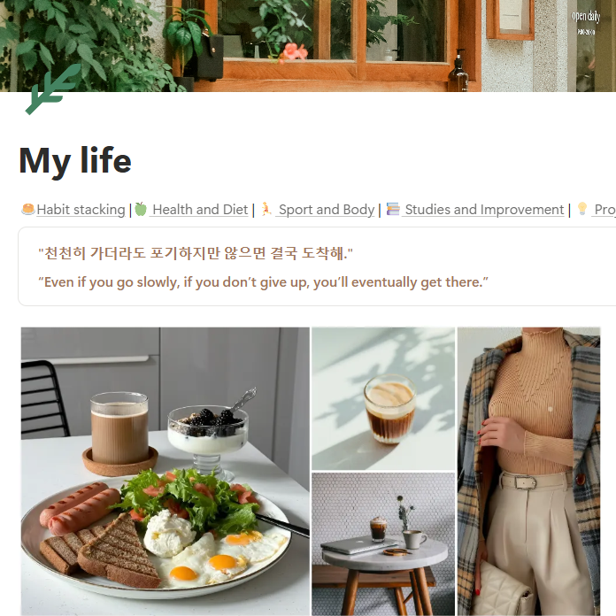

-
Фритрек и нулевой спринт: Подготовка к работе
 </HTML>
</HTML>
Это было самое начало пути. На этом этапе важно было проникнуться основами и настроиться на учёбу. И, возможно, подумать, как новые знания могут повлиять на ваше будущее.
Помню, как долго выбирала направление в IT. Пробовала учить и Python и C#, но именно фритрек фронтенда меня зацепил больше всего. С дрожащими руками я приобрела именно его и начался долгий, тернистый, но безумно интересный и товрческий путь. Главным помощником на всём пути стал мой trusty old Notion.
-
1 спринт: Я — чистый лист
 </HTML>На первых этапах мы работали со страхами и сомнениями, которые часто испытывают новички. Один из них — страх перед чистым листом. Это, конечно же, намного сложнее, чем боязнь куска бумаги. Часто за этим ощущением скрываются более глубокие вопросы: с чего начать? а вдруг будет слишком сложно? что, если я не справлюсь?
Но ведь всё начинается сложно. Когда я начала учить свой первый язык - англиский. Было сложно, было непонятно, но я справилась. За английским пошли и французский, и корейский, и китайский: каждый раз было страшно, каждый раз было непонятно. Глаза боятся, а руки делают - и всё получается со временем.
-
1 спринт: А если не получится?
 </HTML>
</HTML>
Первый проект — позади! Но это всё ещё самое начало пути. Радость могла быстро померкнуть и смениться ожиданием провала. Или вы, наоборот, могли вдохновиться успехами и поверить в себя.
Перый проект позади. Я уже что-то умею, уже хвастаюсь друзьям каким-то визуалом и обретаю уверенность. Многое всё ещё непонятно. Но я же разобралась с началом? Значит и с остальным разберусь!
-
2 спринт: Погоня за идеалом
 </HTML>На этом этапе вы уже достаточно разбирались в основах вёрстки, чтобы понять, как много ещё впереди. Вы могли попытаться погнаться за идеалом и понять, что он недостижим. А, может, вы вовсе и не подвержены перфекционизму и вместо того, чтобы сделать идеально, старались просто сделать.
Я идеалист - всегда хочется сделать всё pixel perfect, но всё идеальное - враг хорошего. Вторая проектная работа дала мне понять, что иногда нужно просто сделать хорошо, потому что переписывать половину проектной работы заново в погоне за идеалом мне очень не понравилось.
-
2 спринт: О тех, кто рядом
 </HTML>Всё это время вы были не одиноки (хотя, возможно, иногда и чувствовали, что одни против целого мира). Вас окружали одногруппники, команда сопровождения и просто близкие люди, которым можно пожаловаться, если очередной макет просто так не поддавался. Осваивать что-то новое легче, когда рядом есть единомышленники, не правда ли?
Любое дело проще вместе. В обучении, ты всегда совершаешь ошибки, которые до тебя уже кто-то совершил. Гораздо проще снова встать на ноги после "провалов", когда ещё 10 человек хором говорят, что тоже наступили на эти грабли, а потом подсказывают решение.
-
3 спринт: Обходные стратегии
 </HTML>На этом курсе вы постоянно решали разные задачи. В какой-то момент вам могло показаться, что решения просто иссякли. Значит, пришло время посмотреть на задачу под другим углом.
В спринте номер 3 приходилось биться в одну стену и головой, и руками, и ногами - ничего не помогало. Но стоило лишь приглядеться, как нашёлся loose-brick, на который нужно было просто нажать, чтобы стена сама пропала.
-
3 спринт: Когда опускаются руки
 </HTML>Во время учёбы часто возникает чувство, когда не знаешь, за что хвататься. Вроде и проектную пора сдавать, и задачи хочется порешать, и в теории получше разобраться, и жизнь не забыть пожить. В такие моменты очень нужна концентрация. Вспомните, откуда вы её черпали.
Прогулка, тихая кофейня, любимая музыка, круассан с лососем и латте с красным перцем - моя тихая пристань концентрации.
-
«Сейчас я здесь»
 </HTML>Сейчас вы уже очень много знаете о вёрстке. Но это только начало. Во-первых, впереди ещё много материала про «красотищу». Во-вторых, с окончанием курса учёба не заканчивается. Вёрстка — это целый мир. И этот мир постоянно меняется. Познать его полностью не получится, но это тот случай, когда важен сам процесс познания. Ведь часто путь — и есть результат.
Сейчас мне всё ещё страшно, даже страшнее, чем в начале. Чем дальше проходишь материал, тем больше понимаешь, что нужно изучить ещё очень многое; а самое страшное, что начинаешь понимать, как скоро ты дойдёшь до своей цели, которая может навсегда изменить твою жизнь. Осталось лишь понять, готов ли ты к таким переменам?